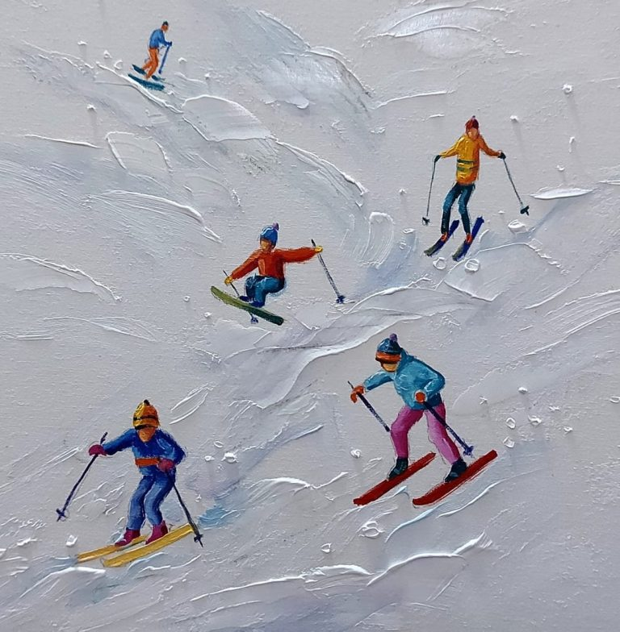

Studio in Porto Alegre · R. João Guimarães, 31 — Rio Branco
Catalogue › Skiers in the snow

Artwork by Silvia Porto
No. 22 · Skiers in the snow
Skiers in the snow is an original acrylic painting by Silvia Porto, an artist from Porto Alegre, Brazil.
A landscape that opens a window in your wall, ideal for living rooms and places to relax.
Commission your own painting, hand-painted by Silvia in acrylic on canvas, in the size you want (minimum lead time 15 working days).
There is no online shop: Silvia confirms the size, finish, price and lead time with you before she starts painting.
Talk directly to Silvia: (51) 99283-8195 · silviabeust1@gmail.com
Try it
See the painting on your wall
Choose a room or upload a photo of your wall to see the right size.
Similar artworks
 Low tide at sunsetStudioai Collection
Low tide at sunsetStudioai Collection Road through flowering hillsStudioai Collection
Road through flowering hillsStudioai Collection Pines in the mistStudioai Collection
Pines in the mistStudioai Collection Lake among snowy mountainsStudioai Collection
Lake among snowy mountainsStudioai Collection Vineyard in autumnStudioai Collection
Vineyard in autumnStudioai Collection Wheat field under a stormStudioai Collection
Wheat field under a stormStudioai Collection Lavender fieldStudioai Collection
Lavender fieldStudioai Collection Birches in autumnStudioai Collection
Birches in autumnStudioai Collection© 2026 Silvia Porto — Fine Arts · Porto Alegre, RSCommissions · WhatsApp (51) 99283-8195 · silviabeust1@gmail.comDeveloped by Diego Kasper - +Paintings